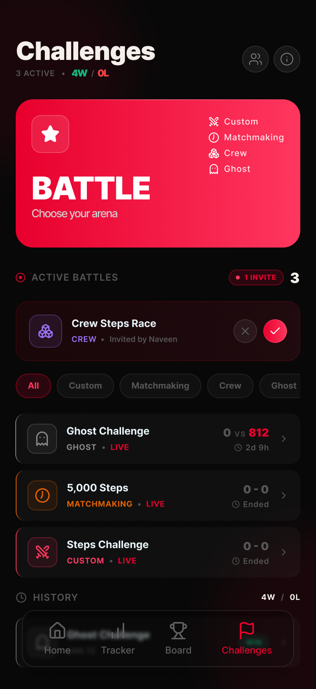
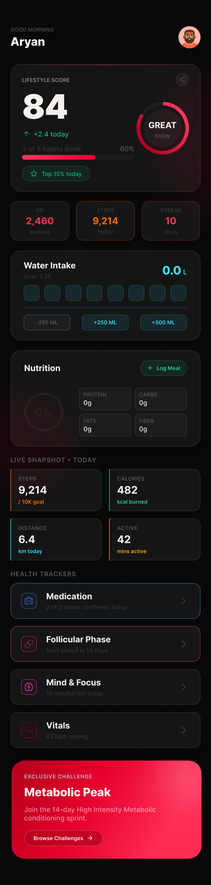
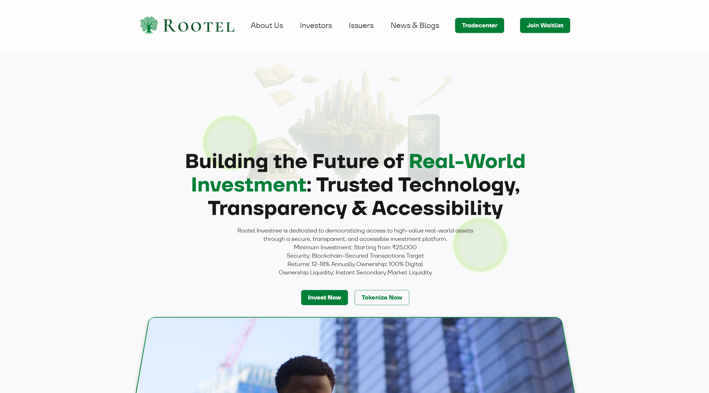
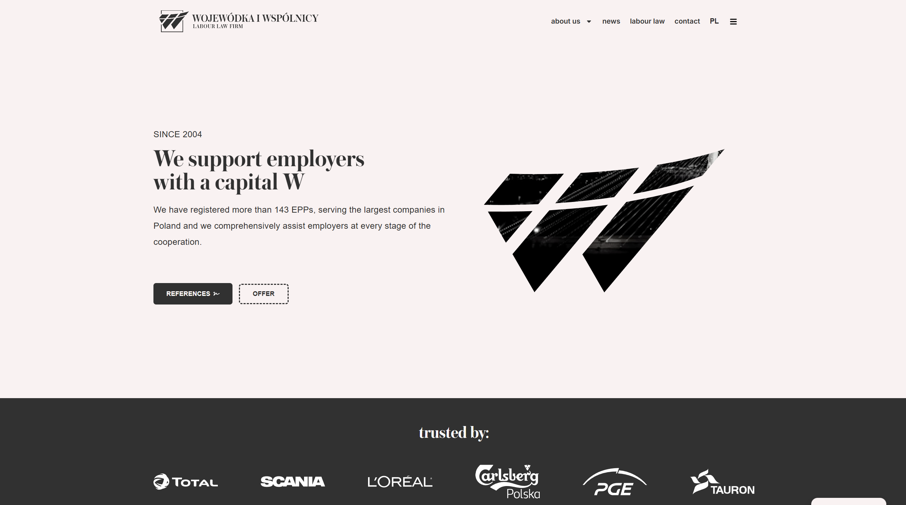
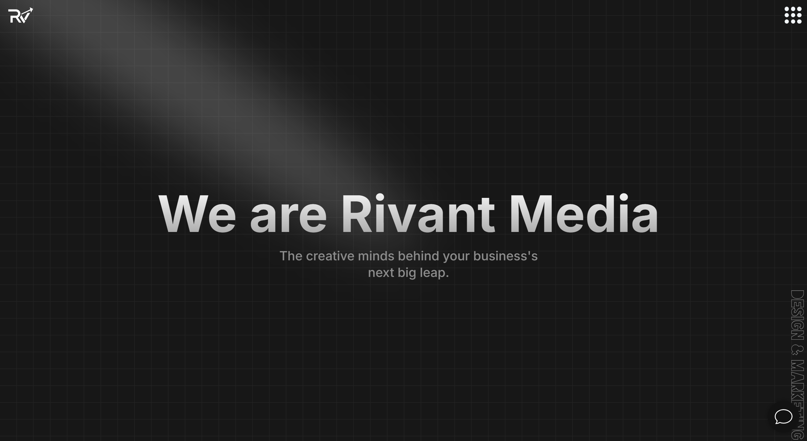
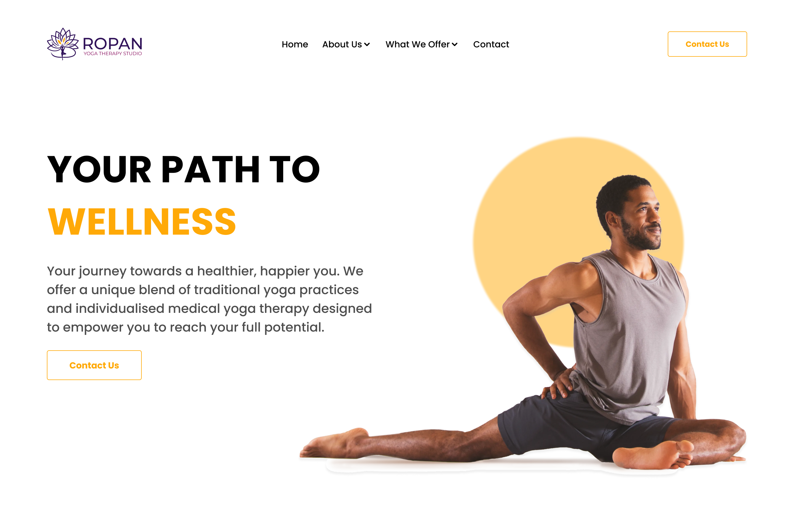

Hello,
I'm Ayush.
I like building products people actually enjoy using — from the first rough idea through to the final, shipped build.


Founding the Product Design of a Fitness Startup · KLYMB

Designing a Blockchain Investment Platform · Rootel

Redesigning an 11-Year-Old Law Firm Website · Wojewódka i Wspólnicy

Designing an Agency Website During My Internship · RIVANT Media

Creating a Landing Page Concept for a Yoga Studio · ROPAN
About
I'm Ayush — twenty, and technically a developer by degree, though most of what I actually do lives on the design side.
I like building things people genuinely enjoy using, not just things that work. That usually means getting involved early—questioning a flow before it's locked in, noticing friction nobody's flagged yet, and thinking about what's quietly going to hurt retention before it becomes a problem.
I've mostly worked by myself or in small teams, which has pushed me to learn quickly and wear more hats than my title suggests. In a small team, ideas move faster, and I get to do more than push pixels—at KLYMB that meant sitting close to product decisions, not just the screens that came after them.
Outside of work I'm usually gaming, messing around with AI tools, out on a motorcycle ride, or somewhere I haven't been before.
Experience
Where I've worked
-
Mar 2026 — Present · Paused · Awaiting Funding
Founding Product Designer
KLYMB
Came in as the first product designer and ended up shaping more than screens — user flows, retention thinking, where the product should go next. Built the design system from scratch, tested it through TestFlight with the founders, and stayed close to engineering through implementation so what shipped matched what was designed.
-
Nov 2024 — Mar 2025
Web Designer
Freelance
Designed and shipped production websites for Wojewódka i Wspólnicy and Rootel, working directly with the clients instead of through a middle layer. Scope shifted on both — good practice in communication, and a fast lesson that real projects rarely move in a straight line.
-
Jun 2024 — Sep 2024
UI/UX Design Intern
RIVANT Media
My first real internship — real clients, a real handoff process, and a production workflow no tutorial prepares you for. Took work from wireframes through to high-fidelity UI, then learned what it actually takes to get a design safely into a developer's hands.